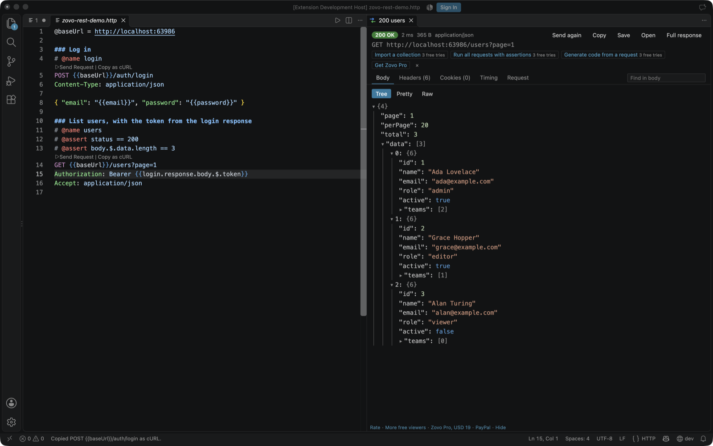

Open files in VS Code and Cursor / Code and APIs
Test an API from a .http file in VS Code, with no account
REST Client & HTTP Client sends HTTP requests from plain .http and .rest files in VS Code. Write a request, click Send Request above it, and the response opens beside the file with its status, time, size, a JSON tree, headers, cookies and a timing breakdown. You need no account, no sign-in and no cloud sync: the requests live in your repo as text. Everything in the request flow is free. Zovo Pro (USD 19 once) adds collection and OpenAPI import, a test run with assertions and JUnit output, and code generation, with 3 free tries each.
Free, MIT license. Extension ID zovo.zovo-rest-client, version 0.1.0. Needs VS Code 1.82.0 or newer.

Steps in VS Code
- Install REST Client & HTTP Client from the Marketplace, or press Ctrl+P (Cmd+P on macOS) and run
ext install zovo.zovo-rest-client. - Create a file named
api.http, or run "REST Client (Zovo): New .http File". - Write a request line such as
GET https://host/path, then headers, then an empty line and the body. Separate requests with lines that start with###. - Click Send Request above the request, or press Ctrl+Alt+R (Cmd+Alt+R on macOS) with the cursor in it. The response opens beside the file.
- Put values in variables (
@baseUrl = ...) or in environments inhttp-client.env.json, and switch the environment with Ctrl+Alt+E (Cmd+Alt+E). Keep secrets inhttp-client.private.env.json, out of git. - To use one response in the next request, name it with
# @name loginand write{{login.response.body.$.token}}. Ifloginwas not sent yet, it is sent first. - To bring in a request from the browser, copy it as cURL in DevTools and run "REST Client (Zovo): Paste cURL as Request". "Copy Request as cURL" goes the other way.
Where Zovo Pro saves time
Sending requests, the full response viewer, variables and environments, chained requests, cURL import and export, GraphQL, file bodies, cookies and the history of the last 50 requests are free, with no limit. There is no trial timer and no license banner.
When your requests are in a collection export in the common v2.x collection format (with its environments), a v4 workspace export or an OpenAPI or Swagger file, the import turns them into a .http file plus http-client.env.json, so they can live in the repo next to the code. The other two Pro tools are Run All Requests with Assertions, which runs a file or a folder in order with # @assert status == 200 style checks and writes a JUnit XML file for CI and an HTML report, and Generate Code from Request, for JavaScript fetch, Node axios, Python requests, Go, C#, Java, PowerShell or cURL.
With Import a Collection or OpenAPI File (Zovo Pro)
- Right-click the exported
.json,.yamlor.ymlfile in the Explorer and pick "Zovo Pro: Import a collection", or run "REST Client (Zovo): Import a Collection or OpenAPI File (Pro)" and pick the file. - The requests are written to a
.httpfile with the same name next to the export (you pick a name if that file exists), and environments are added tohttp-client.env.jsonin the same folder. - The new
.httpfile opens. Click Send Request on any request in it.
Import a Collection or OpenAPI File works 3 times on your computer before it asks for a license, and a try counts only when you get a result. Opening a file shows no popup and no countdown.
Zovo Pro costs USD 19 once. It is not a subscription, and it turns on the Pro tools in every Zovo extension, not only REST Client & HTTP Client. After a card payment (Stripe) your license key shows on the next page. In VS Code, run "Zovo Pro: Enter Zovo Pro license key" from the Command Palette and paste it. The key is checked on your computer, with no network call. With GitHub Sponsors, pick the "$19 one time" tier, then run "Zovo Pro: I already paid: unlock with GitHub Sponsors" and sign in with the same GitHub account. With PayPal, send USD 19 with "Zovo Pro" in the note and the key comes by email within a day.
A team of 5: USD 59 once, by card or by PayPal. Every rule and every Pro tool is on the Zovo Pro page.
Steps in Cursor, Windsurf or VSCodium
- Open the Extensions view with Ctrl+Shift+X (Cmd+Shift+X on macOS).
- Search for
zovo.zovo-rest-clientand click Install. Cursor, Windsurf and VSCodium install from Open VSX, where it is published aszovo/zovo-rest-client. - If your editor has no gallery, download the .vsix from the Open VSX page and run "Extensions: Install from VSIX...".
- Then use it the same way as in VS Code.
What REST Client & HTTP Client handles
- Response bodies as a collapsible JSON tree, pretty or raw, XML and HTML source, and images. Find in body, copy any value, save the body to a file.
- Built-in values such as
{{$guid}},{{$timestamp}},{{$randomInt}},{{$datetime}},{{$processEnv}}and{{$dotenv}}. Hover a variable to see its value, with secrets masked. - GraphQL (
X-Request-Type: GraphQL), form bodies, Basic auth, a body from a file (< ./body.json), cookies for the session, redirects, gzip and brotli. - Per-request options:
# @no-redirect,# @no-cookie-jar,# @timeout 5000.
What it does not do
- No proxy support yet: requests go out directly, not through
http.proxy. - No client certificates (mTLS) and no NTLM, Digest or AWS signature auth. Bearer, Basic and API key headers work.
- Response handler scripts (
> {% ... %}) are not run. Use# @assertlines with Run All Requests instead. - HTML responses show as source, not as a rendered page, and one request runs at a time per window.
Other options
- REST Client (
humao.rest-client, 7.7 million installs, on Open VSX). Its own description: "REST Client for Visual Studio Code". - Thunder Client (
rangav.vscode-thunder-client, 7.7 million installs, on Open VSX). Its own description: "Lightweight Rest API Client for VS Code". - httpYac - Rest Client (
anweber.vscode-httpyac, 142,335 installs, on Open VSX). Its own description: "Quickly and easily send REST, Soap, GraphQL, GRPC, MQTT, RabbitMQ and WebSocket requests directly within Visual Studio Code".
Install counts and Open VSX status were checked on 12 November 2026. Descriptions in quotes are the extensions' own.
Questions
Can VS Code send HTTP requests without an extension?
No. VS Code cannot send a request from a .http file on its own. You need a REST client extension, or curl in the terminal.
Do I need an account?
No. It works with no account, no sign-in and no cloud sync. The extension sends only the requests you send, with no telemetry.
Are my tokens saved in the history?
No. History keeps the last 50 requests as you wrote them, with the variables, so values from environments and .env files are not stored.
Does it work in Cursor or Windsurf?
Yes. Cursor, Windsurf and VSCodium install extensions from Open VSX. Search for the extension in their Extensions view and install it there.
More about REST Client & HTTP Client
Read the REST Client & HTTP Client page for every feature and setting, or the source code on GitHub.
Related guides
- Open a SARIF file in VS Code
- Preview a Swagger or OpenAPI file in VS Code
- Preview an HTML file with its CSS and images in VS Code
- Test a regex in VS Code
Zovo Pro and support
Zovo Pro: USD 19 once, every Zovo viewer. It turns on the Pro tools in this extension and in the other Zovo extensions you use. The free features stay free.
After a card payment your license key shows on the next page. Paste it with the command "Zovo Pro: Enter a key".
You can also support the work with no Pro:
Need your format supported?
Open a format request with a sample file, and I reply there whether it can be done. For USD 299 once, through this GitHub Sponsors tier, I add your file format or a missing feature to this extension, with tests, within 7 days.